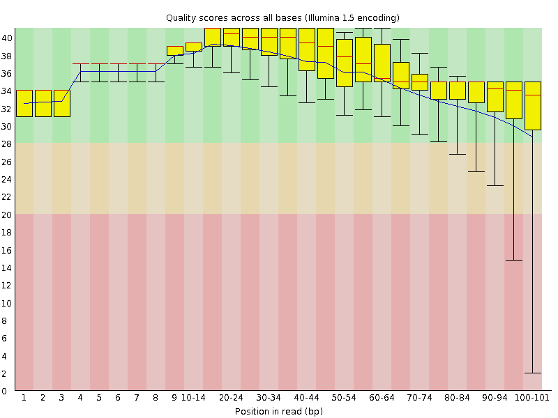
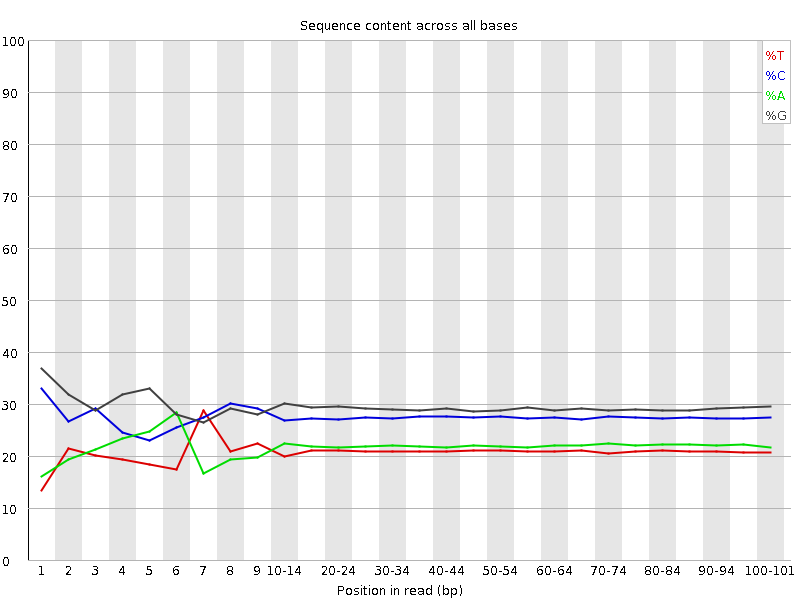
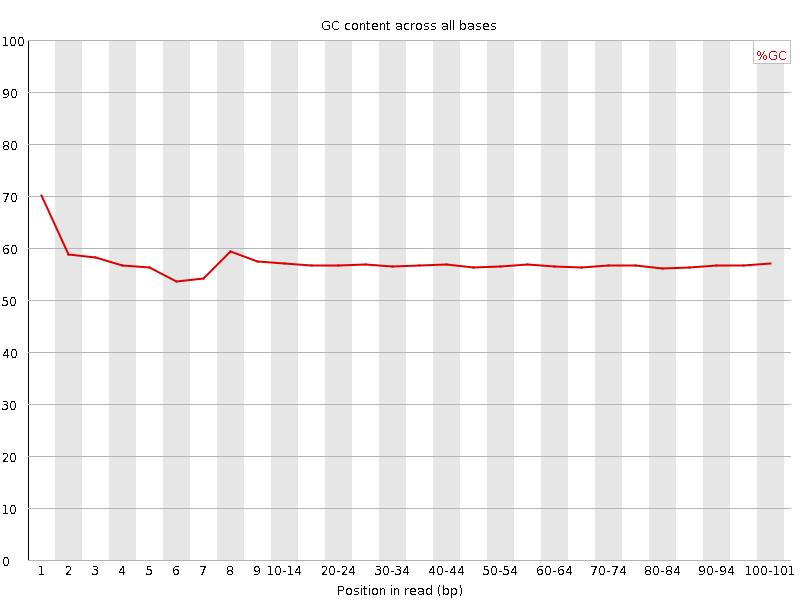
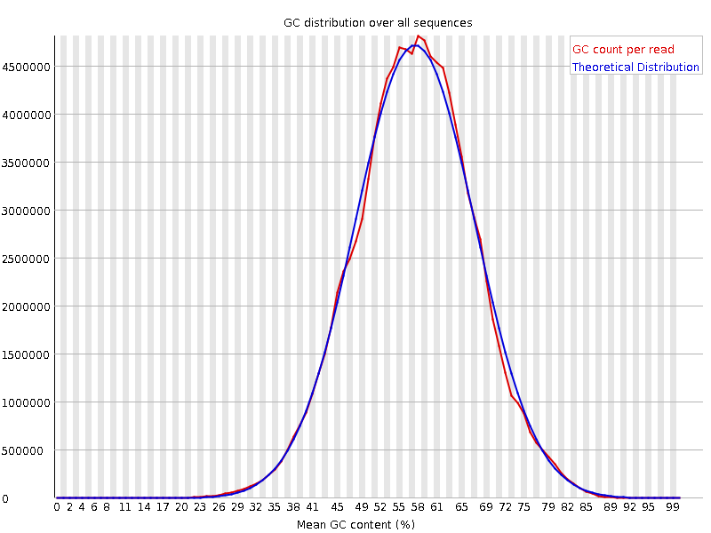
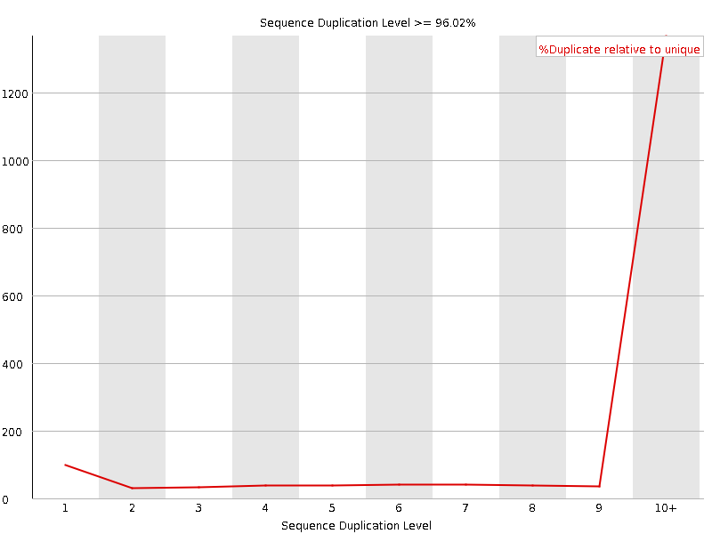
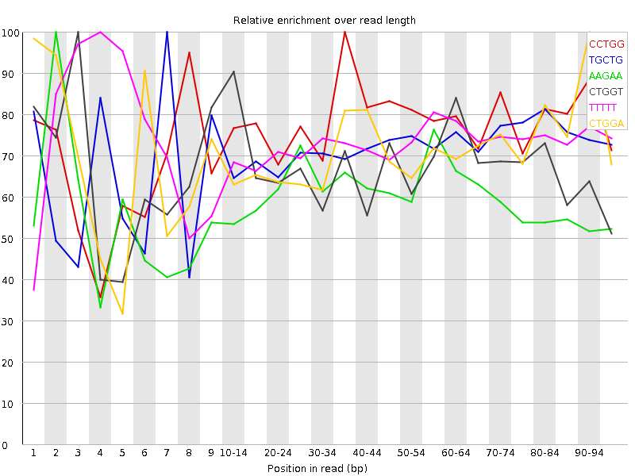

![[OK]](Icons/tick.png) Basic Statistics
Basic Statistics
| Measure | Value |
|---|---|
| Filename | SRR534291_2.fastq |
| File type | Conventional base calls |
| Encoding | Illumina 1.5 |
| Total Sequences | 114006059 |
| Filtered Sequences | 0 |
| Sequence length | 101 |
| %GC | 56 |
Per base sequence quality

Per sequence quality scores

![[FAIL]](Icons/error.png) Per base sequence content
Per base sequence content

Per base GC content

Per sequence GC content

Per base N content

Sequence Length Distribution

Sequence Duplication Levels

![[WARN]](Icons/warning.png) Overrepresented sequences
Overrepresented sequences
| Sequence | Count | Percentage | Possible Source |
|---|---|---|---|
| GTCTTCTGACAGCTGGTGCGCCTGCCCGGGAACATCCTCCTGGACTCAAT | 371883 | 0.32619582087299415 | No Hit |
| CTTCTGACAGCTGGTGCGCCTGCCCGGGAACATCCTCCTGGACTCAATCA | 246747 | 0.21643323360559286 | No Hit |
Kmer Content

| Sequence | Count | Obs/Exp Overall | Obs/Exp Max | Max Obs/Exp Position |
|---|---|---|---|---|
| CCTGG | 57711610 | 3.8043377 | 4.880382 | 35-39 |
| TGCTG | 42746495 | 3.6974027 | 5.141588 | 7 |
| AAGAA | 27254815 | 3.5148456 | 5.8590746 | 2 |
| CTGGT | 40132550 | 3.471307 | 5.1469674 | 3 |
| TTTTT | 15512695 | 3.4484906 | 4.7058563 | 4 |
| CTGGA | 39382440 | 3.233515 | 4.509115 | 90-94 |
| AGAAG | 32993795 | 3.202851 | 4.5611033 | 3 |
| TCCTG | 34623235 | 3.1942298 | 4.7670245 | 7 |
| TGGTG | 38591460 | 3.1295743 | 4.8929367 | 4 |
| GAAGA | 31210935 | 3.029781 | 5.439852 | 2 |
| GCTGG | 47206200 | 2.917513 | 5.1100926 | 1 |
| AAGAT | 17157320 | 2.3309689 | 7.5980067 | 3 |
| GAAAA | 16352980 | 2.1089191 | 5.5933104 | 2 |
| TCTTC | 16201615 | 2.0918925 | 7.007152 | 2 |
| AGATG | 20278890 | 2.073828 | 5.436492 | 4 |
| CTTCT | 15856390 | 2.0473185 | 7.6213026 | 3 |
| AAAAT | 10513580 | 1.8975629 | 5.3184094 | 3 |
| TTCTG | 15628630 | 1.891907 | 6.681829 | 4 |
| TGACA | 14344915 | 1.5646915 | 5.3659506 | 7 |
| TCTGA | 12796390 | 1.4704229 | 5.83836 | 5 |
| GTCTT | 9157675 | 1.1085725 | 6.0795703 | 1 |